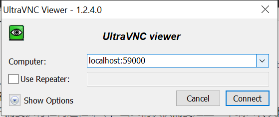
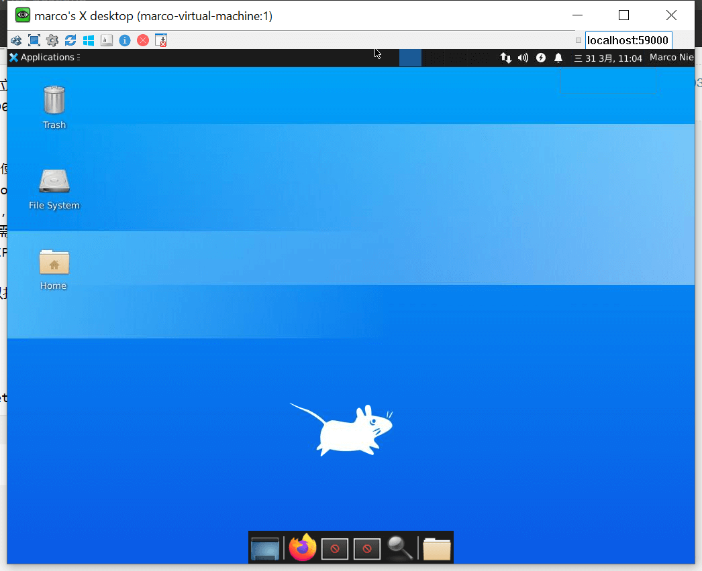

这篇文章上次修改于 619 天前，可能其部分内容已经发生变化，如有疑问可询问作者。
通过 VNC(Virtual Network Computing) 可以使用一个图形化的界面来访问远程服务器。这样对服务器的操作可以更加便捷直观。
下面我们在 Ubuntu 上安装 TightVNC vnc server 并通过更加安全的 SSH tunnel 来连接服务器。
环境需求：
- 远程主机 Ubuntu desktop 20.04
- 关闭 ufw 防火墙或配置允许 openssh 远程连接
- 本地设备 vnc 客户端需要支持 SSH tunnels 连接，如： TightVNC, RealVNC, or UltraVNC.
安装桌面环境
如果安装的是 Ubuntu server，它默认并没有按照桌面环境，开机后就显示一个 shell 环境。如果是 Ubuntu desktop 版本则默认安装了 Ubuntu desktop 桌面环境。
如果我们需要远程访问 vnc，最好选择一个轻量级的桌面环境，这样访问的时候会流畅很多，推荐安装 xfce。
在后续章节，会介绍安装其他桌面环境的方法，如：GNOME，LXDE，KDE。
首先安装 xfce 及其增强包：
sudo apt install xfce4 xfce4-goodies
安装过程中会提示需要选择 xfce 的一个默认 display manager 显示管理器，它是用来在登录系统时的一个图像界面来输入用户及密码的，由于我们只是使用 xfce 来连接 vnc 客户端，且此时已经登陆了对应账户了，所以这里我们任意选择一个显示管理器即可。
可以通过命令查看当前系统已经安装的桌面环境：
ls /usr/share/xsessions/
gnome.desktop gnome-flashback-metacity.desktop ubuntu.desktop
gnome-flashback-compiz.desktop gnome-xorg.desktop xfce.desktop文件中定义了桌面环境启动指令。
安装 vncserver
Ubuntu 本身没有安装 vnc 服务， TigerVNC 来实现，它们都很轻量及快速，很适合配置 vnc server。
下面安装 TigerVNC server：
sudo apt install tigervnc-standalone-server
安装完成后，我们运行 vncserver 来设置一个 vnc 密码，并且初始化相关配置文件：
vncserver
此时会提示要求输入一个密码及 verify 验证密码：
You will require a password to access your desktops.
Password:
Verify: 然后会提示是否需要设置一个 view-only 密码，通过这个密码登录后，不可以使用鼠标或键盘操作服务器。不需要的话输入 n 不创建即可。
然后就会创建相关的默认配置文件和显示相关连接信息，同时会启动一个运行在 5901 端口的 vnc 服务实例：
Would you like to enter a view-only password (y/n)? n
xauth: file /home/sammy/.Xauthority does not exist
New 'X' desktop is marco-virtual-machine:1
Creating default startup script /home/marco/.vnc/xstartup
Starting applications specified in /home/marco/.vnc/xstartup
Log file is /home/marco/.vnc/marco-virtual-machine:1.log后期如果需要修改 vnc 密码可以输入 vncpasswd 设置：
vncpasswd
此时我们的 vnc server 就安装完成并且启动了，下面我们配置启动 xfce。
配置
vnc server 在启动时需要知道需要执行哪些命令，以及需要连接到哪个 graphical desktop environment 图形环境。
vnc server 启动时所执行的命令是在 xstartup 文件中定义的。他在当前登录用户的 home 目录的 .vnc 文件夹内。这个文件在我们第一次启动 vncserver 时会自动创建。下面我们对它进行修改。
由于我们上面已经启动了 vncserver，它启动了一个运行在 5901 端口的 vnc 实例。我们首先关闭这个服务：
vncserver -kill :1
输出信息如下：
Killing Xtightvnc process ID 17648
下面我们打开 ~/.vnc/xstartup 文件，修改为以下内容：
#!/bin/sh
unset SESSION_MANAGER
unset DBUS_SESSION_BUS_ADDRESS
[ -x /etc/vnc/xstartup ] && exec /etc/vnc/xstartup
[ -r $HOME/.Xresources ] && xrdb $HOME/.Xresources
xsetroot -solid grey
vncconfig -iconic &
startxfce4 &这里我们配置了使用 xfce4 作为桌面环境。
注意前三句是需要添加的，否则远程连接会显示为灰屏。最后一句我们启动了 xfce 桌面环境。
如果使用其他桌面环境，可以同查看对应 desktop 文件里的启动命令找到如何正确的启动对应桌面，如 ubuntu.desktop 文件内容如下：
cat /usr/share/xsessions/ubuntu.desktop
[Desktop Entry]
Name=Ubuntu
Comment=This session logs you into Ubuntu
Exec=env GNOME_SHELL_SESSION_MODE=ubuntu /usr/bin/gnome-session --systemd --session=ubuntu
TryExec=/usr/bin/gnome-shell
Type=Application
DesktopNames=ubuntu:GNOME
X-GDM-SessionRegisters=true
X-Ubuntu-Gettext-Domain=gnome-session-3.0可以看到启动命令有如下两条：
Exec=env GNOME_SHELL_SESSION_MODE=ubuntu /usr/bin/gnome-session --systemd --session=ubuntu
TryExec=/usr/bin/gnome-shell在 xstartup 自定义配置中加入以上两条即可。
然后给配置文件添加执行权限：
chmod +x ~/.vnc/xstartup
然后我们重新启动 vncserver：
vncserver -localhost
注意这里我们添加了 -localhost 参数，意味着此 vnc 服务只可以在本机内被连接。如果不添加这个参数，则开放所有网络连接。
我们这里只打开本地网络连接服务，然后通过 ssh tunnel 在远程和本地建立安全的连接并转发 vnc 本地端口。
连接
vnc 本身并不支持通过一些安全的协议进行连接，下面我们通过 ssh tunnel 隧道在本地和远程主机间建立一个安全的链接，然后告诉 vnc 客户端使用这个安全隧道连接远程服务器。
上面我们已经启动了一个 vncserver 在 5901 端口，它可以在本地网络内被连接但无法被外部网络连接。
首先我们通过 ssh 在本地和远程建立一个安全链接，并转发远程主机的 localhost 及端口到本地的特定端口：
ssh -L 59000:localhost:5901 -C -N -l user xxx.xxx.xxx.xxx
以上命令意义如下：
-L 59000:localhost:5901：使用-L参数来转发一个本地端口到远程主机的 host 地址和端口，这里我们将本地 59000 端口转发到远程主机的本地 localhost 的 5901 端口，也就是启动的 vnc server 地址。-C参数用来启用传输数据压缩，可以提高传输效率-N参数用来告诉 ssh 我们不需要执行任何远程命令，当我们仅仅需要建立一个端口转发隧道时，此参数很有用-l定义远程主机的用户名和 IP 地址
ssh tunnel 建立好后，我们就可以打开 vnc 客户端进行连接了。这里我使用 ultraVNC 访问 localhost:59000：

输入我们之前创建的 vnc 密码后就连接到远程服务器了：

当然也可以不使用 ssh tunnel ，但是需要取消 -localhost 参数，就可以直接连接 vnc server。
配置 vnc systemd 服务
为了方便的启动和停止 vncserver 我们可以将其定义为一个 systemd 服务。
在 /usr/lib/systemd/system 目录下新建文件 [email protected]，其中的 @ 可以让我们在操作此服务时添加传递参数，在配置文件中使用 %1 可以读取这个参数。
内容如下：
[Unit]
Description=Start TightVNC server at startup
After=syslog.target network.target
[Service]
Type=forking
User=user
Group=user
WorkingDirectory=/home/user
PIDFile=/home/user/.vnc/%H:%i.pid
ExecStartPre=-/usr/bin/vncserver -kill :%i > /dev/null 2>&1
ExecStart=/usr/bin/vncserver -depth 24 -geometry 1280x800 -localhost :%i
ExecStop=/usr/bin/vncserver -kill :%i
[Install]
WantedBy=multi-user.target- 注意上面的配置中，需要将 user 修改为你实际登录的用户名称，共有 4 个地方
- ExecStart 中我们定义了 24 位色深 1280x800 的 vnc 显示，可以根据需要自行修改
- 使用了
-localhost参数，所以只能使用 ssh tunnel 的方式访问
然后重新加载配置：
sudo systemctl daemon-reload
启动一个 vncserver 使用参数 1 来定义 vnc 服务号：
sudo systemctl start [email protected]
此时我们就启动了一个 vncserver 且其服务号为 :1。
关闭启动的 :1 vncserver：
systemctl stop [email protected]
开机自动启动 vncserver 服务：
systemctl enable [email protected]
这样就可以实现开机自动部署 vncserver 服务了。
使用 gnome 桌面环境
gnome 是 Ubuntu desktop 默认的桌面环境，使用它近似于原生的 Ubuntu 界面。
安装依赖：
sudo apt install gnome-session gnome-terminal gnome-panel gnome-settings-daemon metacity nautilus
修改 ~/.vnc/xstartup 如下：
#!/bin/bash
PATH=/usr/bin
unset SESSION_MANAGER
unset DBUS_SESSION_BUS_ADDRESS
export XKL_XMODMAP_DISABLE=1
export XDG_CURRENT_DESKTOP="GNOME-Flashback:GNOME"
export XDG_MENU_PREFIX="gnome-flashback-"
[ -x /etc/vnc/xstartup ] && exec /etc/vnc/xstartup
[ -r $HOME/.Xresources ] && xrdb $HOME/.Xresources
xsetroot -solid grey
vncconfig -iconic &
gnome-session --builtin --session=gnome-flashback-metacity --disable-acceleration-check --debug &
nautilus &
gnome-terminal &重启 vncserver 服务，连接可以查看效果。
参考链接
How to Install and Configure VNC on Ubuntu 20.04
VNC grey screen, x cursor, nothing helps
vncserver grey screen ubuntu 16.04 LTS
How to Install & Configure VNC Server on Ubuntu 20.04
How to properly configure xstartup file for TightVNC with Ubuntu 20.04 LTS GNOME environment
没有评论